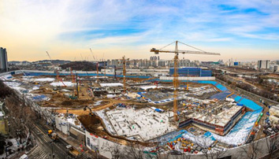
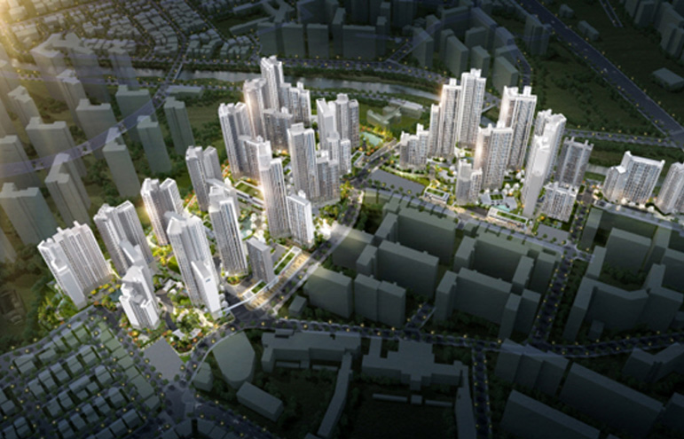

그간 아껴왔던 청약 통장을 꺼내 드는 예비청약자들도 늘어남에 따라 신규 공급도 활발하게 일어나고 있습니다. 그 중심에는 광명뉴타운을 중심으로 환골탈태를 준비하고 있는 광명시가 있는데요.
그간 아껴왔던 청약 통장을 꺼내 드는 예비청약자들도 늘어남에 따라 신규 공급도 활발하게 일어나고 있습니다. 그 중심에는 광명뉴타운을 중심으로 환골탈태를 준비하고 있는 광명시가 있는데요.
광명시는 지난해만해도 규제 지역으로 남아있다가 올해 규제 해제로 재정비 및 재건축 사업에 활기가 도는 모습입니다.

<철산자이 더 헤리티지 공사 현장 사진: 광명시청>
올해 초 시점으로 가볼까요? 지난해 철산에 공급된 ‘철산자이 더 헤리티지’는 무순위 청약에서 결국 모든 가구가 주인을 찾아갔습니다. 정부의 규제 해제가 주효했다는 평가가 많지만, 결국 광명시는 서울과 가장 인접한 수도권 지역으로 입지 측면에서 미래 가치가 높다는 심리가 반영된 것으로 해석할수 있습니다.
입지적으로도 서울 구로구와 금천구가 맞닿아 있고,지하철 7호선 역세권,안산선·월곶판교선·광명시흥선 교통 호재까지 두루 갖춘 상급지로 많은 이들의 이목이 집중될 수밖에 없는 지역입니다.
‘환골탈태’ 광명, 재개발·재건축 현황은?
대대적인 변화가 예상되는 광명시의 재개발·재건축 현황을 먼저 살펴볼까요? 광명뉴타운은 경기도 광명시 광명동 일대를 총 11개 구역으로 나누어 재정비에 들어갑니다.
현재 15구역(광명푸르지오센트베르)과 16구역(광명아크포레자이위브)은 준공됐고, 1·2·4·10·14구역은 착공 후 본 공사가 진행중입니다. 또 5·9·11·12 구역은 관리처분계획인가까지 마쳤습니다.
철산주공의 경우에는 핵심 입지로 꼽히는 8·9단지는 ‘철산자이 더 헤리티지’로 재건축이 한창이며, 지난달 분양을 마쳤습니다. 철산주공12·13단지도 올해 초 안전진단을 통과하면서 재건축이 확정됐습니다. 현지 조사(예비안전진단)를 통과한 철산동 및 하안동 13개 단지도 올해 평가 기준이 개정되면서 안전진단 문턱이 낮아져 발빠른 사업 추진이 전망됩니다.
3기 신도시 이슈도 빼놓을 수 없습니다. 광명시흥지구는 광명시의 광명·옥길·노온사·가학동과 시흥시의 과림·무지내·금이동 일대 1271만㎡ 부지에 조성될 초대형 택지지구로, 3기 신도시 가운데 가장 큰 규모로 주목을 받고 있죠. 내년까지 지구계획 승인을 마치고 2025년 대지공사에 착공, 2027년에 7만여 주택이 공급될 예정입니다.
제자리 찾아가는 광명시 부동산 시장
지난해 부동산 시장이 침체를 겪으면서 광명시 아파트 투자에 대한 열기도 한 풀 꺾이는 모습이었습니다. 하지만 최근 다시 제자리를 찾아가는 모습이 포착되고 있죠. 국토교통부 실거래가 공개시스템에 따르면 광명시 아파트들의 시세가 다시 오름세를 보이고 있는 것을 알 수 있습니다.
광명뉴타운 내 한 공인중개소 관계자는 “규제 해제 이후로 급매물이 소화되면서 시세도 제자리를 찾아가고 있고 매수 문의도 늘어났다. 광명뉴타운과 철산주공 재정비로 기대감이 높아지면서 광명 외 지역에서도 매수 문의가 들어오고 있다”고 전했습니다.
광명뉴타운의 재개발·재건축이 관심을 받는 이유 중 하나는 구도심 정비사업이라는 점을 꼽을 수 있습니다.
신도시, 대규모 택지지구의 경우 일상에서 필요한 기반시설 구축에 오랜 시간이 걸리지만 반면 구도심은 전통적으로 중심 주거지 역할을 수행했던 만큼 교통, 행정, 교육, 쇼핑 및 편의시설 등 다양한 인프라가 이미 갖춰져 있어 입주와 동시에 만족도 높은 실생활을 누릴 수 있기 때문입니다. 현재 잘 닦여진 인프라에 주거 환경이 개선되면서 한층 더 높은 입지적 가치를 확보할 수 있을 것이란 기대감이 반영된 것이라고 볼 수 있습니다.
신규 공급 기대감 높아… 첫 분양 단지는?
신규 공급 기대감 높아… 첫 분양 단지는?
신규 공급에 대한 관심도 뜨겁습니다. 이 중 가장 먼저 공급되는 단지는 광명1R구역 재개발 단지인 ‘광명자이더샵포레나’입니다.

이 단지는 목감천을 사이에 두고 서울 구로구 개봉동과 인접해 있는 만큼 사실상 서울 생활권을 자랑하고 있습니다. 광역 도로망을 통해 서울, 경기, 인천 등 주요 거점 및 중심 업무지구 접근도 용이하고, 지하철 1호선 개봉역과 구일역, 7호선 광명사거리역도 도보나 버스로 가깝게 이용할 수 있습니다.
3,585가구 규모 대단지 아파트로 올해 광명뉴타운 재개발·재건축으로 공급될 단지들 중 규모도 가장 큽니다. 그만큼 랜드마크로 자리매김할 가능성도 높다고 평가되는데요. 대형 건설사들의 컨소시엄 시공, 서울 생활권 입지, 확실한 미래가치 등으로 이 단지는 연일 수요자들의 뜨거운 관심을 받고 있습니다.
이외에도 광명시는 올해 대규모 신규 공급이 예정되어 있는데요. 부동산R114에 따르면, 올해 광명시에 신규 공급 물량은 1만 2,142가구이며, 일반분양 물량은 2,624가구에 달한다고 합니다. 재개발·재건축 중심으로 신규 공급이 활발한 만큼 광명시는 新주거단지로의 변화가 기대됩니다.